Hurricane Katrina's Impact on Gulf Coast Carbon Sinks
Spectral mixture analysis of forest disturbance and carbon loss using Landsat 5 and Google Earth Engine
Introduction
Forests are one of the most important parts of the global carbon cycle, absorbing carbon dioxide as live biomass and slowing the buildup of greenhouse gases. The Gulf Coast holds a large share of the carbon stored in US forests, but a sink is only as strong as the health of the forest behind it. When trees are damaged or killed, they stop absorbing carbon and start releasing it as they decompose. If enough biomass is lost, a forest can flip from a net carbon sink to a net carbon source, and hurricanes are among the most damaging disturbance events the Gulf Coast experiences.
Hurricane Katrina made landfall as a Category 3 storm on August 29, 2005, killing an estimated 320 million trees and producing one of the largest forest mortality events in recorded US history. Chambers et al. (2007) estimated that decomposing biomass from the storm would eventually release about 105 Tg of carbon, using field data, spectral mixture analysis, and regional scaling.
This project uses Google Earth Engine and Landsat 5 imagery to independently estimate forest carbon loss across the Katrina impact zone. The core metric is ΔNPV, the change in non-photosynthetic vegetation, a spectral signature that captures increases in dead wood, litter, and woody debris after the storm.
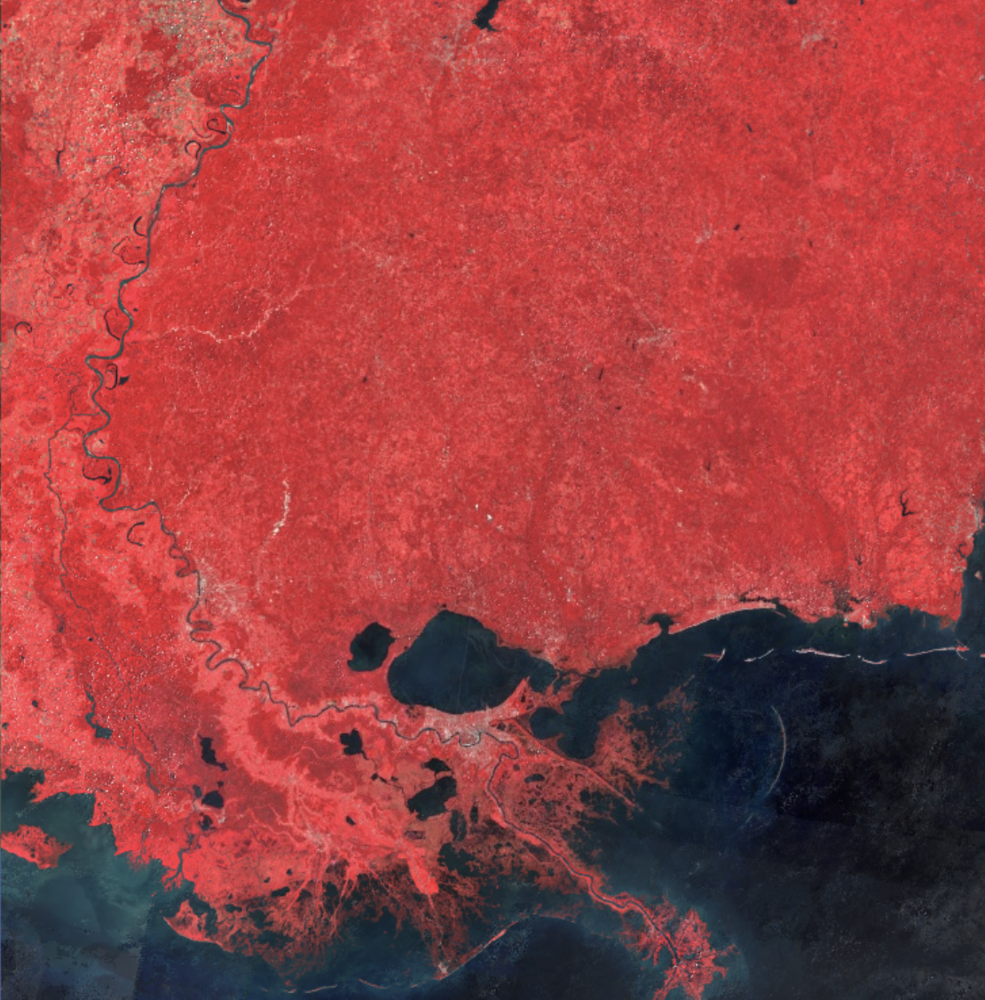
Figure 1: Pre-Katrina False Color Composite (2003)
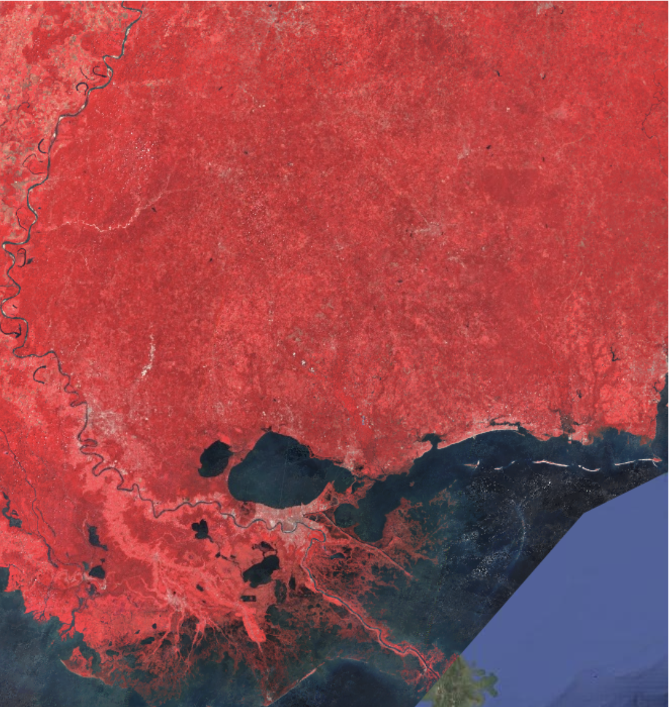
Figure 2: Post-Katrina False Color Composite (2006)
Data
NASA and USGS Landsat 5 Thematic Mapper imagery, accessed through Google Earth Engine as Collection 2 Level 2 Surface Reflectance products (30 m resolution). Three seasonal composites were built from late summer/early fall scenes to minimize phenology differences between dates: a pre-storm baseline from 2003 (126 scenes), a post-storm assessment from 2006 (126 scenes), and a recovery period from 2010 (130 scenes). Bands 1–5 and 7 were used, covering visible, near infrared, and short-wave infrared wavelengths, since these ranges are most sensitive to the difference between live canopy, dead biomass, bare soil, and shadow.
The area of interest is a polygon covering the Gulf Coast forest impact zone from southeastern Louisiana through southern Mississippi and into southwestern Alabama, digitized to follow the MODIS-derived polygon used in prior studies. The total forested area within the polygon is about 687,930 hectares.
The NLCD 2001 land cover dataset was used to restrict the analysis to forest pixels, including deciduous forest, evergreen forest, mixed forest, woody wetlands, and emergent herbaceous wetlands. Wetland classes were kept in the mask because cypress-tupelo swamps and bottomland hardwood forests along the Louisiana–Mississippi coast were among the ecosystems hit hardest by the storm.
Methodology
Landsat 5 scenes were filtered to the study area and time windows, then masked for cloud and cloud shadow using the QA_PIXEL bitmask (bits 3 and 5). The remaining valid pixels were reduced to a single cloud-free composite per period using a median reducer, which is more robust to residual atmospheric artifacts than a single-date image.
Each composite was unmixed into four endmembers: green vegetation (GV, live canopy), non-photosynthetic vegetation (NPV, dead wood and litter), soil, and shade. Endmember reflectance values were taken from published Gulf Coast forest spectral libraries (Adams et al.; Roberts et al.), and model fit was checked with the root-mean-square error between reconstructed and observed reflectance.
ΔNPV was calculated as NPVpost − NPVpre. A positive ΔNPV signals an increase in dead woody material after the storm, the expected spectral fingerprint of forest damage. Pixels were classified into five disturbance levels using thresholds adapted from Chambers et al. (2007): pixels below 0.05 were treated as undisturbed, since that magnitude of change falls within normal seasonal variability, while higher ΔNPV values were split into low, moderate, high, and severe disturbance classes, each tied to an estimated mortality fraction.
Carbon stock values were assigned per NLCD forest type using U.S. Forest Service FIA data for the southeastern US: deciduous hardwood forests (70 Mg C/ha), mixed forest (55 Mg C/ha), woody wetlands (50 Mg C/ha), evergreen pine (40 Mg C/ha), and emergent herbaceous wetlands (15 Mg C/ha), giving an area-weighted mean of 44.4 Mg C/ha across the study area. Carbon loss per pixel was calculated by multiplying the forest-type carbon stock by the mortality fraction of its disturbance class, then scaling to the 900 m² Landsat pixel area.
A stratified random sample of 250 points (50 per disturbance class) was generated in Earth Engine and visually checked against Google Earth's pre/post Katrina imagery to confirm canopy conditions at each point. A confusion matrix was built from this sample to calculate overall, producer's, and user's accuracy.
View the full Google Earth Engine script
// Key output: NPV change -> disturbance class -> carbon loss estimate (Mg C)
// STUDY AREA & MAP SETUP
var studyArea = ee.Geometry.Rectangle([-92.0, 29.0, -88.0, 32.5]);
Map.centerObject(studyArea, 8);
Map.setOptions('SATELLITE');
// TIME PERIODS (Chambers et al. used late-summer scenes)
var periods = {
pre: { start: '2003-07-01', end: '2003-10-31', label: 'Pre-Katrina 2003' },
post: { start: '2006-07-01', end: '2006-10-31', label: 'Post-Katrina 2006' },
recovery: { start: '2010-07-01', end: '2010-10-31', label: 'Recovery 2010' }
};
// LANDSAT 5 PREPROCESSING
function maskL5clouds(image) {
var qa = image.select('QA_PIXEL');
var cloudShadow = (1 << 3);
var cloud = (1 << 5);
var mask = qa.bitwiseAnd(cloudShadow).eq(0).and(qa.bitwiseAnd(cloud).eq(0));
return image
.updateMask(mask)
.select(['SR_B1','SR_B2','SR_B3','SR_B4','SR_B5','SR_B7'])
.rename(['B1','B2','B3','B4','B5','B7'])
.multiply(0.0000275).add(-0.2) // USGS C2 scale/offset
.clamp(0, 1)
.copyProperties(image, ['system:time_start']);
}
var L5 = ee.ImageCollection('LANDSAT/LT05/C02/T1_L2');
function buildComposite(period) {
return L5.filterBounds(studyArea)
.filterDate(period.start, period.end)
.map(maskL5clouds)
.median()
.clip(studyArea);
}
var imgPre = buildComposite(periods.pre);
var imgPost = buildComposite(periods.post);
var imgRecovery = buildComposite(periods.recovery);
// SPECTRAL MIXTURE ANALYSIS
var SMA_BANDS = ['B1','B2','B3','B4','B5','B7'];
var ENDMEMBERS = {
GV: [0.0482, 0.0875, 0.0419, 0.5228, 0.2180, 0.0955],
NPV: [0.0982, 0.1257, 0.1430, 0.2820, 0.5543, 0.3981],
Soil: [0.1150, 0.1600, 0.2100, 0.2650, 0.4240, 0.3520],
Shade: [0.0000, 0.0000, 0.0000, 0.0000, 0.0000, 0.0000]
};
function runSMA(image) {
var fractions = image.select(SMA_BANDS).unmix(
[ENDMEMBERS.GV, ENDMEMBERS.NPV, ENDMEMBERS.Soil, ENDMEMBERS.Shade],
true, true
).rename(['GV','NPV','Soil','Shade']);
var reconstructed = fractions.select('GV').multiply(ee.Image(ENDMEMBERS.GV))
.add(fractions.select('NPV').multiply(ee.Image(ENDMEMBERS.NPV)))
.add(fractions.select('Soil').multiply(ee.Image(ENDMEMBERS.Soil)))
.add(fractions.select('Shade').multiply(ee.Image(ENDMEMBERS.Shade)));
var residual = image.select(SMA_BANDS).subtract(reconstructed);
var rmse = residual.pow(2).reduce(ee.Reducer.mean()).sqrt().rename('RMSE');
return fractions.addBands(rmse);
}
var smaPre = runSMA(imgPre);
var smaPost = runSMA(imgPost);
var smaRecovery = runSMA(imgRecovery);
// NPV CHANGE
var dNPV_postPre = smaPost.select('NPV').subtract(smaPre.select('NPV')).rename('dNPV_2003_2006');
var dNPV_recovery = smaRecovery.select('NPV').subtract(smaPost.select('NPV')).rename('dNPV_2006_2010');
var dGV_postPre = smaPost.select('GV').subtract(smaPre.select('GV')).rename('dGV_2003_2006');
// FOREST MASK
var nlcd2001 = ee.ImageCollection('USGS/NLCD_RELEASES/2019_REL/NLCD')
.filter(ee.Filter.eq('system:index', '2001'))
.first()
.select('landcover');
var forestClasses = [41, 42, 43, 90, 95];
var forestMask = nlcd2001.remap(forestClasses, ee.List.repeat(1, forestClasses.length), 0).eq(1).rename('forest');
var dNPV_forest = dNPV_postPre.updateMask(forestMask);
var dGV_forest = dGV_postPre.updateMask(forestMask);
// DISTURBANCE CLASSIFICATION
var disturbanceClass = ee.Image(0)
.where(dNPV_forest.gte(0.05).and(dNPV_forest.lt(0.15)), 1) // Low
.where(dNPV_forest.gte(0.15).and(dNPV_forest.lt(0.25)), 2) // Moderate
.where(dNPV_forest.gte(0.25).and(dNPV_forest.lt(0.35)), 3) // High
.where(dNPV_forest.gte(0.35), 4) // Severe
.updateMask(forestMask)
.rename('disturbance_class')
.byte();
// CARBON LOSS
var C_STOCK_MgC_HA = 60; // mean aboveground C stock (Mg C/ha)
var mortalityFraction = ee.Image(0)
.where(disturbanceClass.eq(1), 0.10)
.where(disturbanceClass.eq(2), 0.25)
.where(disturbanceClass.eq(3), 0.50)
.where(disturbanceClass.eq(4), 0.85);
var carbonLoss_MgC_ha = mortalityFraction.multiply(C_STOCK_MgC_HA).rename('carbon_loss_MgC_ha');
var pixelArea_ha = ee.Image.pixelArea().divide(10000);
var carbonLoss_MgC_pixel = carbonLoss_MgC_ha
.multiply(pixelArea_ha)
.updateMask(forestMask)
.rename('carbon_loss_MgC_pixel');
// SUMMARY STATISTICS
var carbonStats = carbonLoss_MgC_pixel.reduceRegion({
reducer: ee.Reducer.sum(),
geometry: studyArea,
scale: 120,
maxPixels: 1e10,
bestEffort: true
});
print('Total Carbon Loss (Mg C):', carbonStats.get('carbon_loss_MgC_pixel'));
// EXPORTS
Export.image.toDrive({
image: dNPV_forest.float(),
description: 'Katrina_dNPV_2003_2006_30m',
folder: 'Katrina_Carbon_Change',
region: studyArea,
scale: 30,
crs: 'EPSG:4326',
maxPixels: 1e10,
fileFormat: 'GeoTIFF'
});
Export.image.toDrive({
image: disturbanceClass.byte(),
description: 'Katrina_disturbance_class_30m',
folder: 'Katrina_Carbon_Change',
region: studyArea,
scale: 30,
crs: 'EPSG:4326',
maxPixels: 1e10,
fileFormat: 'GeoTIFF'
});
Export.image.toDrive({
image: carbonLoss_MgC_ha.float(),
description: 'Katrina_carbon_loss_MgC_ha_30m',
folder: 'Katrina_Carbon_Change',
region: studyArea,
scale: 30,
crs: 'EPSG:4326',
maxPixels: 1e10,
fileFormat: 'GeoTIFF'
});
// Full script also includes a legend panel, click-to-inspect pixel
// tool, NDVI/NBR context indices, and four analytics charts
// (dNPV histogram, GV/NPV fraction trajectories, carbon loss by
// forest type) rendered directly in the Earth Engine Code Editor.
Results at a Glance
Of the 687,930 total hectares of forest in the study area, 112,120 hectares (16.3%) were classified as disturbed. Severe and high disturbance combined accounted for 8,856 hectares (1.3% of total forest area), representing the most significant damage, with estimated tree mortality between 50 and 85 percent. Low disturbance was the most spatially extensive class at 86,394 hectares.
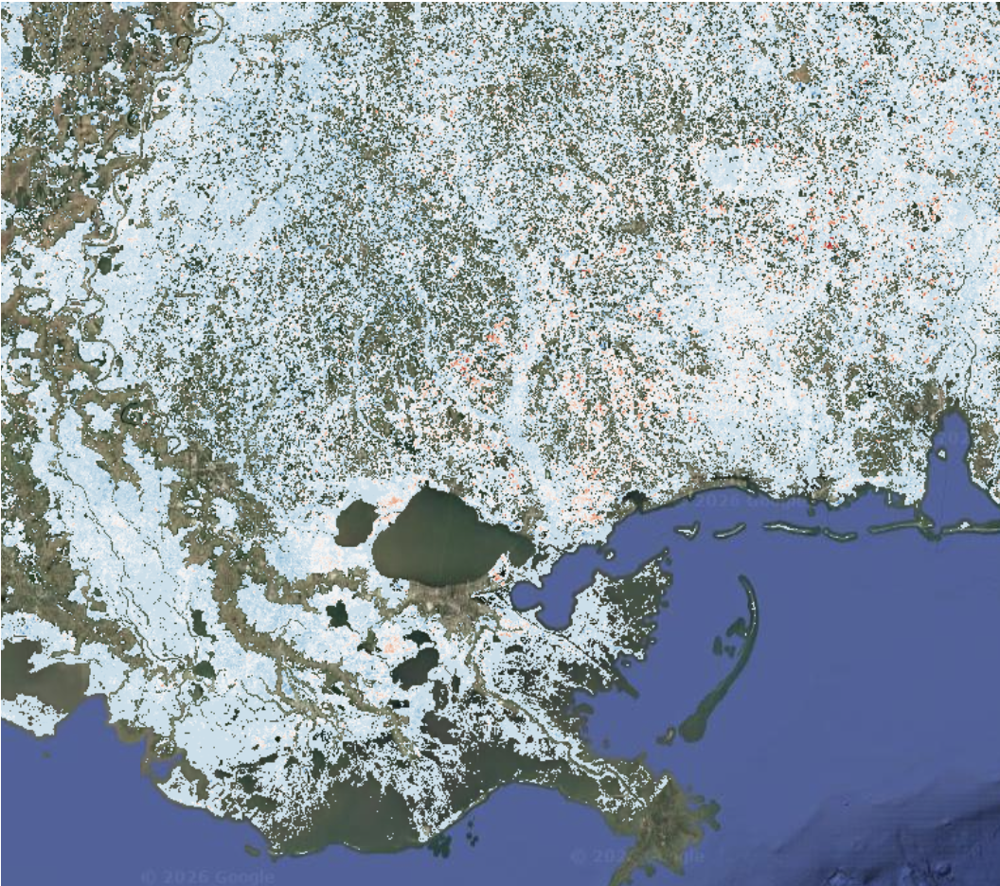
Figure 3: ΔNPV Change Map (Red = Positive ΔNPV, Blue = Negative ΔNPV)
Where the Damage Was
Severely and highly disturbed pixels cluster along the coastal zone and in the counties northeast of Katrina's landfall, following the documented wind isotach pattern. Low and moderate disturbance pixels occur farther from the storm center, consistent with the attenuated wind field at those distances.
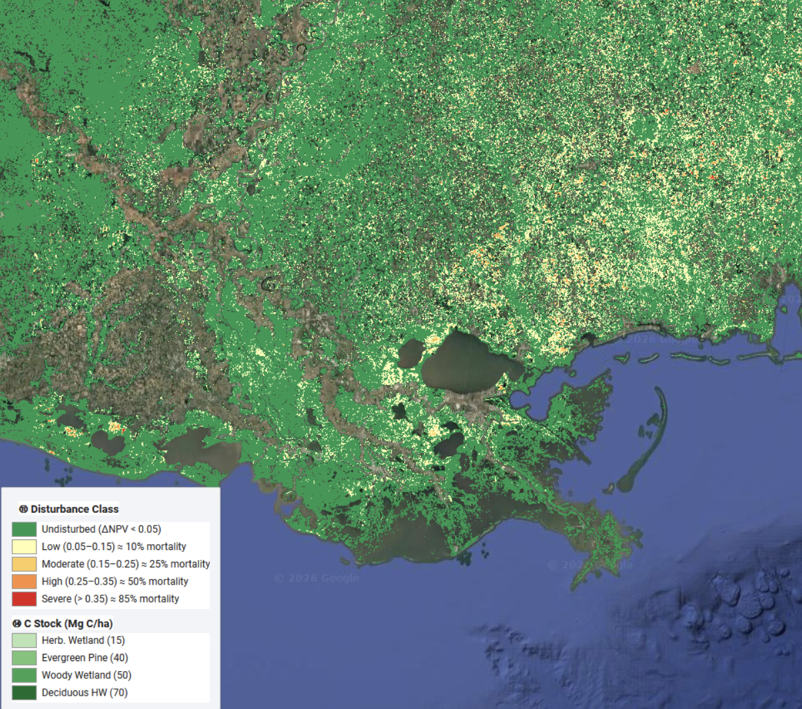
Figure 4: Disturbance Classification Map
Disturbance Classification
Each forested pixel was sorted into one of five classes based on its ΔNPV value: undisturbed, low, moderate, high, or severe. This classification is what drives the carbon loss calculation, since each class carries its own estimated mortality fraction.
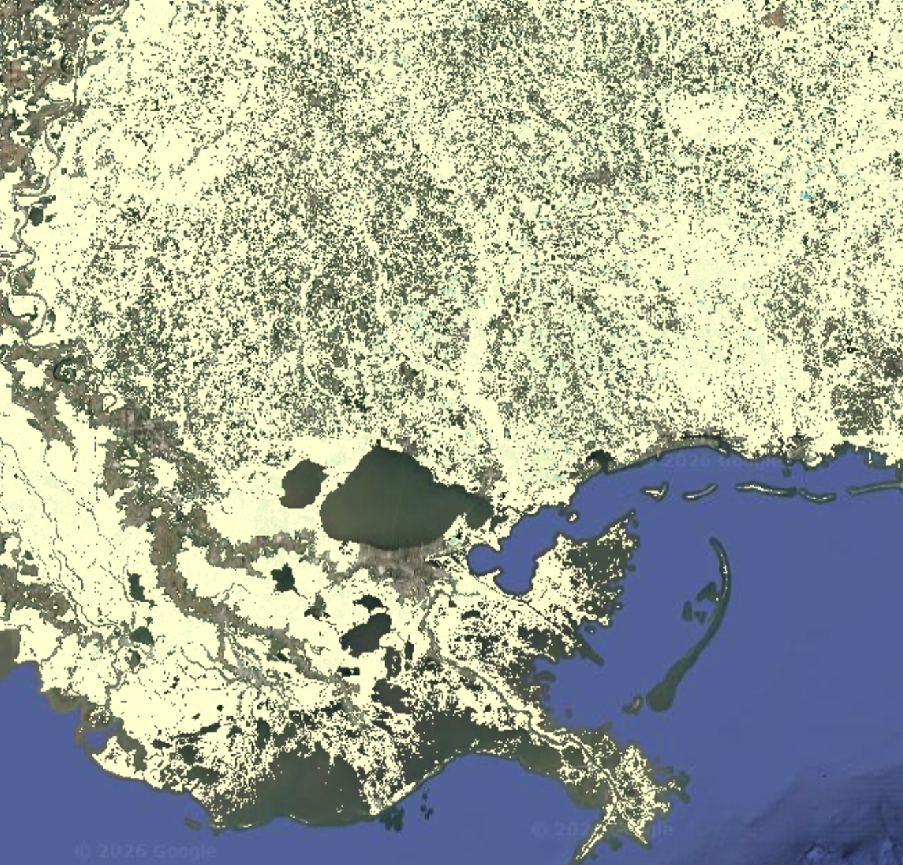
Figure 5: Carbon Loss Per Hectare (Yellow = low, Blue = high)
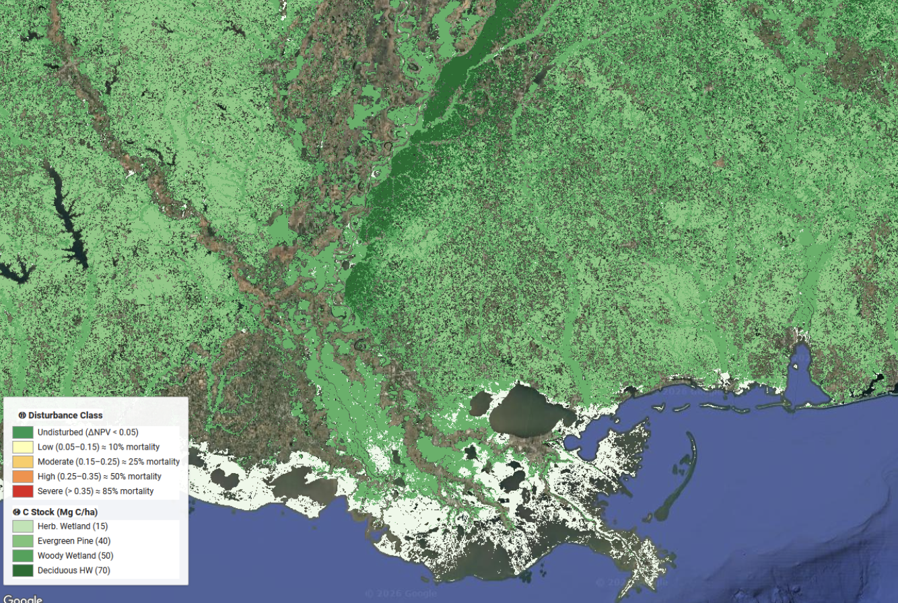
Figure 6: Forest-Type Carbon Stock Map
Carbon Loss by Forest Type
Total estimated carbon loss across all disturbed forest types was approximately 10.85 Tg C. Evergreen pine forest contributed the largest share at 4.79 Tg C, followed by woody wetlands at 3.39 Tg C, mixed forest at 1.67 Tg C, deciduous hardwood at 0.67 Tg C, and emergent herbaceous wetlands at 0.33 Tg C. Pine and wetland forests dominating the total loss reflects both how much of the study area they cover and their direct exposure to the storm's strongest winds and flooding.
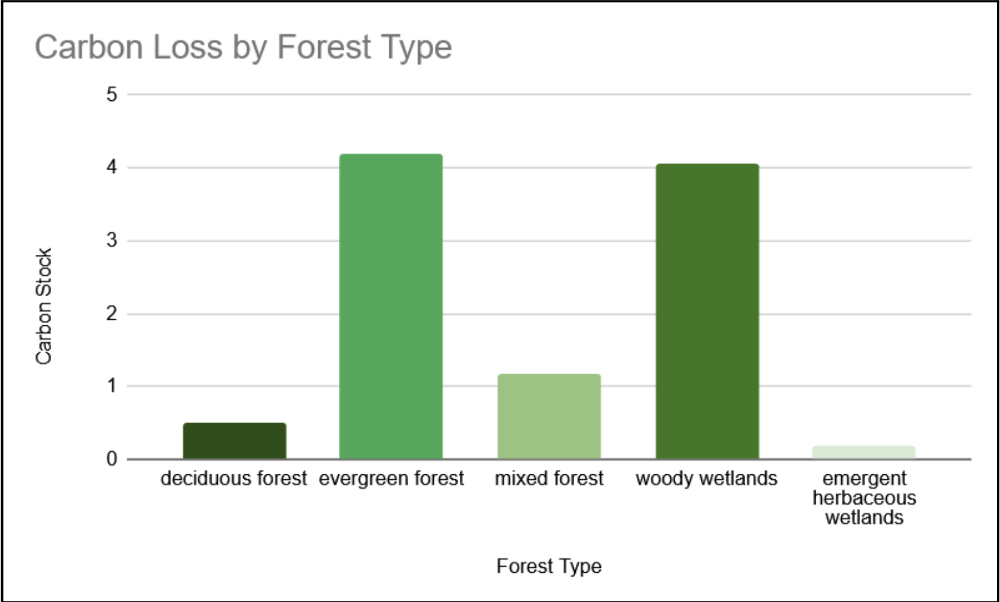
Figure 11: Carbon Loss by Forest Type
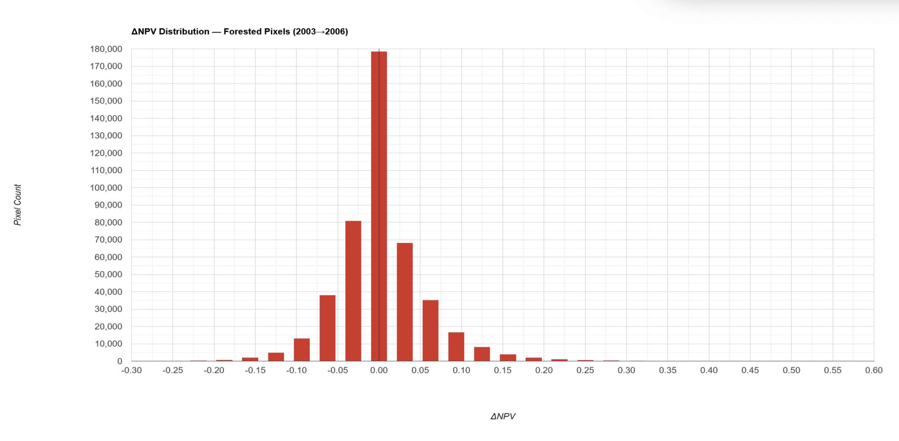
Figure 8: ΔNPV Distribution Across Forested Pixels

Figure 7: Recovery Classification Map, 2006–2010
A Slow Recovery
Mean NPV fraction across forested pixels rose from 0.039 pre-storm to 0.054 post-storm, and continued climbing to 0.069 by the 2010 recovery period. Meanwhile mean green vegetation fraction fell from 0.456 in 2003 to 0.445 in 2006 and to 0.417 in 2010. Both trends point the same direction: five years after Katrina, the study area still had not entered a net vegetation recovery phase. This tracks with how hurricane-killed trees behave after a storm — they keep falling for years as root systems decay, continuing to add coarse woody debris even as new understory growth starts to appear.
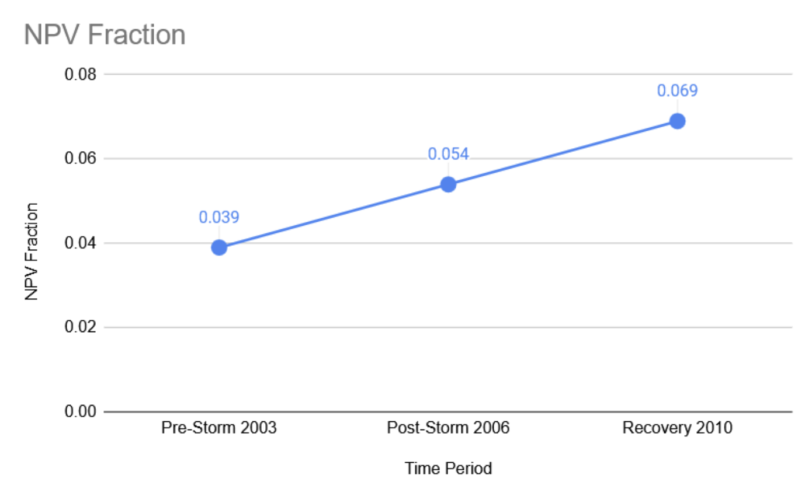
Figure 9: Mean NPV Fraction by Time Period
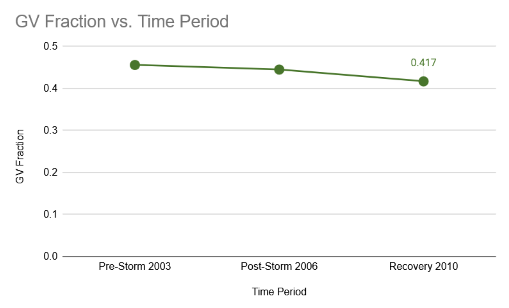
Figure 10: Mean GV Fraction by Time Period
Validation
A stratified random sample of 250 points (50 per class) was checked against Google Earth's pre/post Katrina imagery, producing an overall classification accuracy of 84.4%. The undisturbed class had the highest producer's accuracy at 94.9%, and the severe class scored a perfect 100% user's accuracy, meaning every pixel labeled severe was confirmed as severe on the ground. The moderate (76.5%) and high (77.6%) disturbance classes were the hardest to separate, which is typical — the boundary between intermediate damage levels is inherently fuzzier than the extremes.
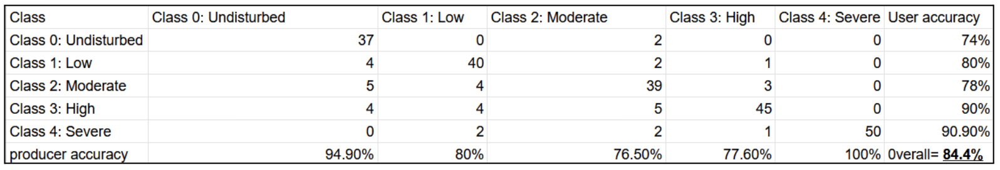
Figure 13: Confusion Matrix
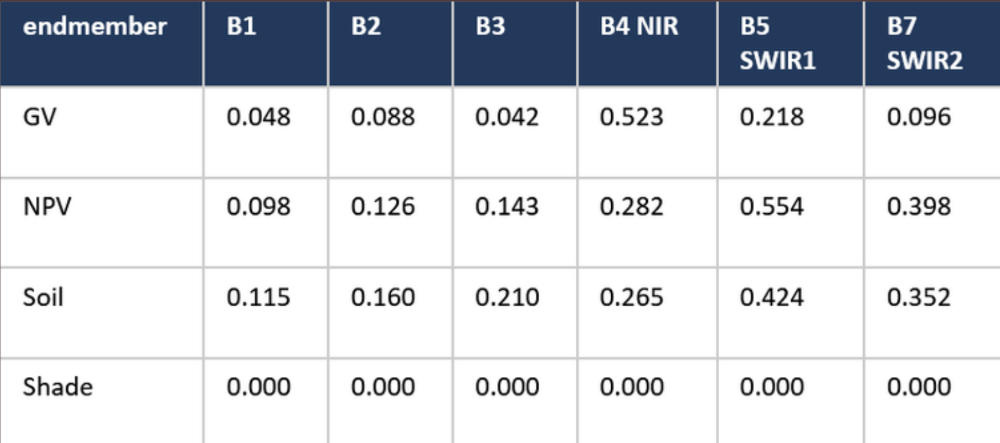
Figure 12: SMA Endmember Reflectance Values
Discussion
The estimated total carbon loss of 10.85 Tg C is much lower than the 105 Tg C reported by Chambers et al. (2007). The biggest reason is methodological: Chambers et al. ran a Monte Carlo model calibrated with field data from hundreds of plots, explicitly modeling the full distribution of stem sizes and biomass within each disturbance class. This project instead applied a single mean mortality fraction and fixed carbon stock to every pixel in a class, which smooths out the contribution of large-diameter trees and likely underestimates loss in the most severely damaged stands.
The forest-type-specific carbon stock approach used here (44.4 Mg C/ha area-weighted mean) is also lower than the 60 Mg C/ha regional constant used in an earlier version of this analysis, mainly because the Gulf Coast study area contains more pine flatwoods and wetland forest — lower biomass systems — than the bottomland hardwoods that dominated Chambers et al.'s Pearl River field sites. That difference in baseline carbon stock is a second, independent reason the estimate here comes in lower. Future work could use continuous biomass products, like USFS FIA spatial layers or airborne LiDAR-derived canopy height models, to better capture the within-class variability that a class-mean approach misses.
From a carbon sink perspective, the 2006–2010 trajectory suggests these forests were still a net carbon source, not a sink, five years after landfall — decomposition was still outpacing new growth. A longer time series extending through 2015–2020 would be needed to see when, or whether, that balance tips back toward recovery.
Data & Sources
- Chambers, J.Q., Fisher, J.I., Zeng, H., Chapman, E.L., Baker, D.B., & Hurtt, G.C. (2007). Hurricane Katrina's carbon footprint on U.S. Gulf Coast forests. Science, 318(5853), 1107.
- Adams, J.B., Smith, M.O., & Gillespie, A.R. (1993). Imaging spectroscopy: Interpretation based on spectral mixture analysis. In Remote Geochemical Analysis. Cambridge University Press.
- Roberts, D.A., Gardner, M., Church, R., Ustin, S., Scheer, G., & Green, R.O. (1998). Mapping chaparral in the Santa Monica Mountains using multiple endmember spectral mixture models. Remote Sensing of Environment, 65(3), 267–279.
- Smith, J.E., Heath, L.S., Skog, K.E., & Birdsey, R.A. (2006). Methods for calculating forest ecosystem and harvested carbon with standard estimates for forest types of the United States. USDA Forest Service General Technical Report NE-343.
- Google Earth Engine: A planetary-scale geospatial analysis platform
- USGS Landsat 5 Mission